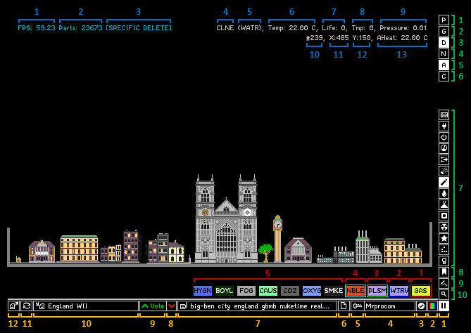

Game Interface

- Framerate: FPS stands for Frames Per Second. It shows how many frames the game can show in one second. The maximum is 60 FPS.
- Particle Count: It shows the number of particles currently in the simulation. It does not count WALLs. It only appears when Debug Mode is enabled. You can toggle Debug Mode by pressing the D key.
- Mode: It shows the mode that is currently being used. It only appears when there is a mode activated, which could be Specific Delete, Specific Replace, Find or a collection of them at the same time.
- Particle Type: It shows the name of the particle your cursor is currently hovering over.
- Ctype: It shows the secondary type or the ctype property of the particle your cursor is currently hovering over. It only appears when Debug Mode is enabled. You can toggle Debug Mode by pressing the D key.
- Temperature: It shows the temperature of the particle your cursor is currently hovering over in Celsius.
- Life: It shows the Life property of the particle your cursor is currently hovering over. This property is used for different things depending on the type of particle. It only appears when Debug Mode is enabled. You can toggle Debug Mode by pressing the D key.
- Tmp: It shows the Tmp property of the particle your cursor is currently hovering over. This property is used for different things depending on the type of particle. It only appears when Debug Mode is enabled. You can toggle Debug Mode by pressing the D key.
- Pressure: It shows the pressure of the spot under your cursor.
- Particle Index: It shows the index or the ID of the particle your cursor is currently hovering over. It only appears when Debug Mode is enabled. You can toggle Debug Mode by pressing the D key.
- X Coordinate: It shows the X coordinate (horizontal) of the cursor. It only appears when Debug Mode is enabled. You can toggle Debug Mode by pressing the D key.
- Y Coordinate: It shows the Y coordinate (vertical) of the cursor. It only appears when Debug Mode is enabled. You can toggle Debug Mode by pressing the D key.
- Ambient Heat Temperature: It shows the temperature of the air your cursor is currently hovering over. It only appears when Debug Mode is enabled and when Ambient Heat Mode is enabled. You can toggle Debug Mode by pressing the D key.
- Sand Effect: This quick option shows nice effects on sand.
- Draw Gravity Field: This quick option makes the game display newtonian gravity field.
- Draw Decoration: This quick option makes the game display decoration layer.
- Newtonian Gravity: This quick option allows gravity generated by some particles and tools to work.
- Ambient Heat: This quick option enables ambient heat mode, which allows heat to travel through air.
- Show Console: This quick options opens up the console, which is where you can run commands to do various tasks in the game.
- Categories: Element categories contain a list of related elements.
- Favourites: You can add your favourite elements to this category by holding Ctrl + Shift and then left clicking on the element. You can remove an element from the favourites category by holding Ctrl + Shift and then right clicking on the element.
- Decoration Tools: This category contains tools that allow you to paint particles with any colour.
- Search: Clicking this opens up a search menu to search for any element, including hidden elements not listed in any category.
- Pause/Resume: Toggles between pausing the simulation and resuming it.
- Render Options: Opens up a dialog box with render options. This is where you can change the view mode or customise your own.
- Edit Profile/Sign In: Signs in to the server with a Powder Toy account. Register a new account from the official Powder Toy website if you do not have one. When you are signed in, this button becomes an Edit Profile button, clicking it opens up a dialog box with some account settings.
- Sign In: When you are not signed in, this button becomes part of the previously button. When you are signed in, it becomes a separate button, clicking it opens up a dialog box where you can sign out or sign in to a different account.
- Clear Simulation: Resets the simulation.
- Tags: Shows a list of tags placed on the current save. Click it to add tags to the current save (requires siging in). Tags are meant to improve search results.
- Vote Down: Votes down the current save (requires siging in).
- Vote Up: Votes up the current save (requires siging in).
- Save: Uploads your simulation to the server if you are signed in. If you are not, it will save your simulation locally so that you can access them offline. You still save locally while being signed in by holding Ctrl and then clicking it.
- Re-Upload: Updates the current simulation.
- Reload: Reloads the current simulation. Right clicking the reload button will show information on the current save.
- Browse: Opens up the save browser where you can find saves made by the community. You can also hold Ctrl and then right click the browse button to browse through your local saves.
- Left-Click Element: The element you draw with when you are left-clicking. You can change it by left-clicking a different element. By default, it is the DUST element.
- Right-Click Element: The element you draw with when you are right-clicking. You can change it by right-clicking a different element. By default, it is the erase particles element.
- Middle-Click Element: The element you draw with when you are middle-clicking. You can change it by middle-clicking a different element. By default, it is the sample tool.
- Selected Element to be Replaced: The element that is used to be replaced in Specific Replace mode, or deleted in Specific Delete mode. You can change it by holding Ctrl+Alt and then clicking an element. By default, it is the erase particles element.
- Elements: Unselected elements you can select to draw with.
Interactive Interface Tutorial by Mrprocom